HAC-D User Manual
1. What HAC-D is
HAC-D turns a cluster topology (one of four Ascend templates, or any custom description) into hardware counts with the fault types each unit carries, then into availability, mean time between interruptions, recovery time, goodput and cost figures, and helps allocate a target back to hardware FIT, fault-management mechanisms and recovery limits. It is grounded in the survey chapter AI 集群可靠性建模 and cross-checked against an independent reference engine (an audited 30-day discrete-event simulator of one training job).
1.1 Principles
- Every number carries its formula and its 口径. A rate is an event class per denominator at a level (for example hard interruptions per card-hour at job level). Quantities of different event classes are never added.
- Closed forms first, with validity flags. The first-order goodput checks τ + δ ≪ M and R ≪ M; when the flags fire the headline switches to the exact renewal form.
- Monte Carlo when the assumptions break. Non-exponential lifetimes, correlated failures, finite spare pools, finite windows and silent corruption route to simulation; the closed-form result stays visible with a delta badge.
- Provenance on every parameter. Library records and scenario inputs carry source, year and confidence (measured, paper-reported, vendor, derived, assumed, scan-level).
v3.7-gpu); GPU fleet measurements stay in the parameter library as tagged analogues, because no public Ascend failure data exists.1.2 Architecture
| Package | Role | Notes |
|---|---|---|
packages/core | pure TypeScript numerics | units, math, RBD, CTMC, repair paths, recovery ladder, checkpoint and goodput models, SDC delivery (two terminal rules), mechanism chain (configurable rung order) and library, planner with checkpoint bounds, spares, MTTR, allocation with the loss budget, sensitivity, cost, Monte Carlo with Student-t and Wilson statistics, incident-rate estimation (Garwood), ReMAP catalog import, scenario schema and examples, parameter library (635 records), v4 topology templates (A2 RoCE, A3 CloudMatrix384, Atlas 950) with per-unit fault types, allocation strategies (optimal / MTTR-preferred / MTTF-preferred); v5 input records and budget primitives; v6 ingest (vocabularies, evidence cards, 口径 normaliser, gates, delta, extension requests) |
apps/web | Vite + React static app | bilingual zh / en, light and dark, computation in a Web Worker; six main pages (Projects, Topology & hardware, Allocation, Mechanism library, Fault library, Review) and two behind All pages (Scenario editor, Inference & spares) |
packages/cli | command line hacd | same functions as the web app, JSON or table output; the v5 report pipeline findings | bom | budget | methodology | prune | study; the v6 input pipeline ingest |
packages/mcp | MCP server | 22 tools for agents (evaluate, compare, allocate with the loss budget, tornado, simulate, library, Excel, mechanisms, ledger, planner, audit, study, incident-rate estimation, v4 topology bill of materials and allocation strategies) |
packages/importers | Excel import and export; v6 worksheets | method fingerprinting of formulas, topology extraction, reconciliation, workbook export with live formulas; v6: the Markdown worksheet profile hacd-worksheet-1 with converters both ways for the input records, templates, a spreadsheet device-table importer |
packages/reports | bilingual HTML report kit | the v5 Findings / Methodology / BOM recipes and the v6 delta review page as pure functions of data, reproduced byte for byte |
packages/agent | v6 extraction worker | OpenAI-compatible adapter (vLLM / SGLang / llama.cpp), chunking, two prompt variants, evidence cards accepted by grounding and two-pass agreement, review queue, draft worksheets |
2. Quick start
npm install # Node ≥ 20, npm workspaces npm run dev # web app on http://localhost:5173 npm test # 672 core + 29 importer tests (golden vectors included) node --import tsx packages/cli/src/main.ts examples # CLI claude mcp add hacd -- node --import tsx packages/mcp/src/server.ts # MCP server
In the web app the main page is Topology & hardware: pick a template card (A2, A3 · CloudMatrix384, Atlas 950, Atlas 960E) and a scale (built-in 10k / 100k / 200k / 500k or any N); the hardware table, the fault types per unit, the KPIs and the Reliability tab recompute after every edit, there is no "recalculate" step. The app opens on the Projects page (§3.4), which lists the projects — a project is a scenario with its page settings; the four topology templates are built in, see §15.3; the scale is a parameter, not a separate example — and the header shows the active project's name, which opens the Projects page. The language (中文 / EN) and theme (Auto / Light / Dark) switches sit in the header. Projects are saved automatically in the browser's local storage on every edit; Export JSON, Import JSON and Reset to template are on the Projects page.
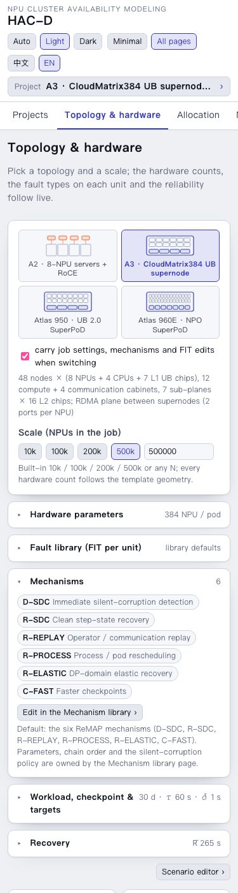
Minimal mode. The app opens with the main flow only (Projects → Topology & hardware → Allocation → Mechanism library → Fault library → Review); the header toggle All pages adds the Scenario editor and the Inference & spares page. Every function also stays in the CLI and the MCP server. ReMAP. scripts/remap-bridge.ts runs the expert engines ReMAP vendors on a HAC-D scenario and compares them with the closed forms, and hacd import-remap turns a ReMAP or reference event catalog into a scenario (see docs/REMAP_INTEGRATION.md).
3. Concepts and 口径
3.1 Metrics
| Metric | Definition | Where |
|---|---|---|
| Availability A (compensated, 补偿后) | steady-state probability that the system structure is up, with redundancy, switchover success, automatic recovery and the sub-health policy as configured | Report |
| Original availability (原始) | same structure with every unit fault counted as an outage repaired manually and redundancy removed; the compensation waterfall adds the mechanisms one by one | Report |
| Strict / tolerant / performance-weighted | sub-health counted as down / as up / weighted by its performance factor | Report |
| MTBF, equivalent MTTR | A / ν_sys and (1 − A) / ν_sys from the steady-state failure frequency | Report, scenario editor |
| MTBI | mean time between job interruptions, 1 / Σ nᵢλᵢ (plus isolations of detected sub-healthy units) | KPI strip |
| Recovery R(N) | mean time from interruption to productive training, excluding recompute; pipeline, ladder or mixture | Reliability tab |
| Operational availability A_op | running-time share 1 / (1 + λ_rb R_rb + λ_p R_p) (saves and recompute count as running) | KPI strip, Allocation, Compare |
| Goodput (first order, exact renewal, product, Daly) | useful computation per wall time under periodic checkpointing, §12.5 | Reliability tab |
| Effective goodput | headline goodput × (1 − P_blocked) × φ_job × (1 − ℓ_local): spares, sub-health and elastic-domain loss applied | Reliability tab, Compare |
| Delivered goodput (正确有效产出) | correct progress retained at the end of the job window ÷ window length, after silent-corruption rollback and terminal discard | KPI strip, Allocation, Mechanisms |
| Capacity availability (inference) | probability that at least the required replicas are up in an N+k pool | Inference |
3.2 Fault classes
Three manifestations are modelled per component class, each with its own 口径 and its own handling:
- Interruption (中断): the unit stops; the job is detected down, recovers through the mechanism chain and the global checkpoint recovery, rolls back to the last checkpoint unless a no-rollback rung handled it.
- Sub-health (亚健康, fail-slow): the unit keeps running at a performance factor φ for a duration; the synchronous job is slowed (straggler law); the policy is tolerate or isolate (detected units are switched out after saving progress).
- Silent corruption (静默错误, SDC): the state is corrupted without an interruption; immediate detection catches a share, undetected corruption is discovered after a fallback delay and rolled back to the last clean checkpoint; still-dirty state at the end of the window is discarded.
3.3 Confidence and provenance
Each rate or time may carry provenance (source, organisation, year, URL, derivation) and a confidence tag. The library (§8) uses the same tags; the reference examples tag borrowed shares and targets as assumed. The planner (§6.3) and the allocation strategies (§7.1) derate the mechanism parameters; the classic Allocation methods weight feasibility by confidence. The v4 per-unit fault types (§4.3) are the catalog priors converted to hardware units and stay tagged assumed. v6 failure rates normalised from internal device tables carry the mapping's derivation and a policy confidence — assumed when any impact factor or source is an assumption, otherwise derived; a model's own confidence is never used (§15.5).
3.4 Projects page
A project is a scenario together with its page settings: the Allocation page's tab, strategy form and classic-method inputs; the Mechanism library page's tab, players, value function, parameter overrides, provisional switch, efforts and audit selection; the Topology page's tab and "carry" checkbox; the Projects page's Compare tab set, the Review page's sensitivity metric, and the Projects and Review tabs. Reopening a project restores the whole setup; results and reports are recomputed, not stored. Every edit is saved immediately in the browser (v5.1; the scenario list of earlier versions is migrated once, with default settings).
The Projects page is the first tab, also in minimal mode, and the only place to load and save. Its table lists every project with its template, NPUs / workload, origin (built-in or user) and last modification, with the actions Open (activates it and goes to the Topology page), Rename (inline), Duplicate, Export JSON, Reset to template (built-in projects) and Delete (never the last project). Below the table: New project from one of the four templates at a built-in scale, Import JSON (a project bundle {"version": "hacd-project-1", "scenario", "settings"} or a bare scenario JSON; settings missing from an older bundle take their defaults) and Reset to built-ins. The header shows the active project's name; clicking it opens this page.
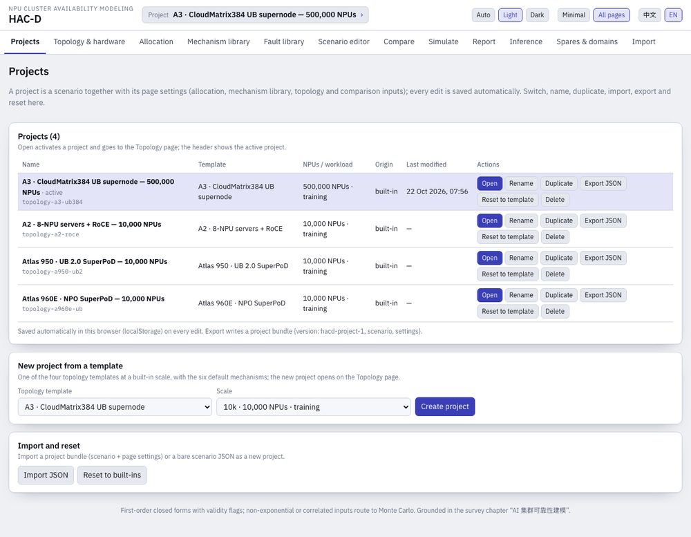
v5.2: the Projects page has four tabs — List (open, rename, duplicate, delete, export, reset to template), New (from a template at a built-in scale), Import (a project or scenario JSON, reset to the built-ins, and the former Import page's Excel flow, §10.1) and Compare (the former Compare page's picker and KPI table, §10.2).
4. Topology & hardware page
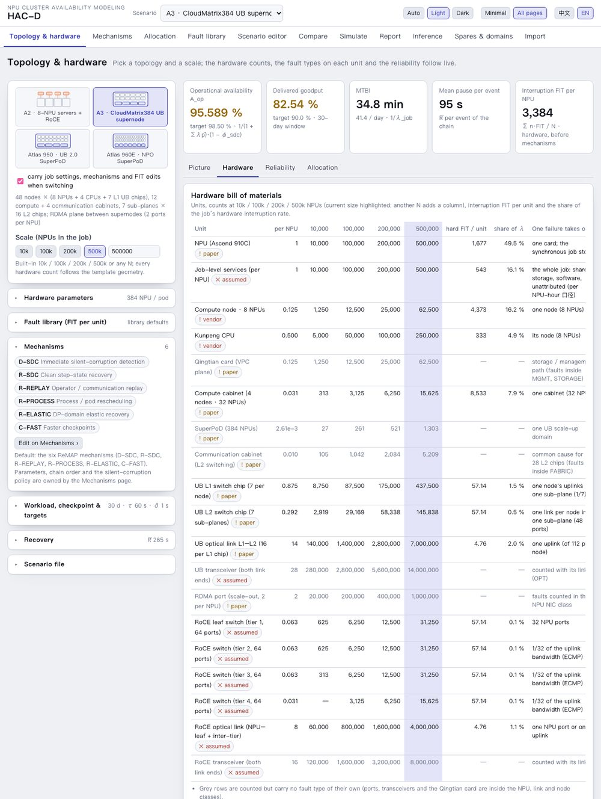
The first page answers: for this topology at this scale, which hardware units are there, how many, which fault types do they carry, and what does that give with the default mechanisms. Inputs sit on the left in collapsible groups, outputs on the right under a KPI strip in four tabs (Picture, Hardware, Reliability, Allocation). Every edit recomputes in place.
4.1 The four topology templates
| Template | Scale-up domain | Geometry | Source and confidence |
|---|---|---|---|
| A2 · 8-NPU servers + RoCE | 8 | Atlas 800T A2 servers: 8 × Ascend 910B (HCCS mesh), 4 × Kunpeng 920, 8 × 200GE RoCE ports straight from the NPUs; 8 servers = 64 NPUs per cabinet; RoCE folded Clos as the parameter plane | product pages (vendor); cabinet density derived from the Atlas 900 A2 PoD (32 Kunpeng 920 per cabinet); switch radix 64, non-blocking, two transceivers per link assumed |
| A3 · CloudMatrix384 | 384 | 48 nodes × (8 NPUs + 4 CPUs + 7 L1 UB chips), 12 compute + 4 communication cabinets, 7 sub-planes × 16 L2 chips × 48 ports, 16 links per L1 chip (5,376 per pod); RDMA scale-out plane with 2 ports per NPU | arXiv 2506.12708 §3.3 (paper); two transceivers per link and the scale-out Clos assumed |
| Atlas 950 · UB 2.0 SuperPoD | 1,024 (8,192 selectable) | v4.2, product-page spec: 16 compute + 4 UB interconnect cabinets; 64 NPUs (8 trays × 8) and 16 Kunpeng 950 per compute cabinet; in-cabinet 2D full mesh (448 electrical links, 72 low-radix UB switches per cabinet); 2 × 800G optical links per NPU into a one-tier Clos of 128-port UB switches (16 per pod, 4,096 transceivers); scale-out 2 × 400G UBoE per NPU as two planes of a three-tier Clos (128³ / 4 = 524,288). The SuperPoD variant selector switches to the 8,192-NPU roadmap pod (128 + 32 cabinets, 128 switches), the UB-Mesh paper's 4D mesh (64 HRS per 8K) or the v4.1 CloudMatrix384 two-level copy | product page, HC2025 keynote, Ascend 950 white paper (vendor); LightCounting's teardown of the WAIC 2026 machine (analyst); Hot Chips 2025 and UB-Mesh (paper); LRS count, switch radix and the scale-out planes assumed |
| Atlas 960E · NPO SuperPoD | 4,032 (nominal 4,096) | v4.2: 56 compute + 14 UB interconnect cabinets of 9 blades × 8 NPUs and 18 CPUs; in-cabinet LinkBlade (5 chips per cabinet, assumed); 126 cross-cabinet LinkDevices (176 × 1.6 Tb/s) per pod from 2.2 TB/s per NPU; NPO optics (5,500 Hi-ONE engines replacing 48,000 × 800G modules per 4,096 NPUs, counted as 800G-equivalent links); scale-out four planes × two tiers of 1,024-port switches to 512,000 NPUs (125 pods) | HC2026 release and keynotes (vendor); the cabinet split from one media report (智东西, scan-level); blade chips and scale-out ports assumed |
New units carry the per-unit FIT of their CloudMatrix384 counterparts (assumed equivalence): every switch chip (LRS, UB switch, HRS, LinkBlade, LinkDevice) that of one UB chip (57.1 FIT), every optical link that of one L1–L2 link (4.76 FIT); in-cabinet electrical links and NPO engines are counted only. The evidence, the review of the earlier draft and the calibration of the counts against the public figures are in the survey 昇腾下一代集群架构综述（复核与扩展版）.
Clicking a card switches template. With carry job settings, mechanisms and FIT edits ticked (default) the current design moves to the other topology: NPU count, workload, recovery, silent-corruption policy, targets, the applied mechanisms (re-applied in their order with their parameters) and the FIT edits of fault types both templates carry; the hardware comes from the new template. Each template keeps its own scenario in the top-bar list (topology-a2-roce, topology-a3-ub384, topology-a950-ub2, topology-a960e-ub); a scenario that was not built from a template (the reference catalog, the older Ascend examples) is shown with its own counts and a note.
4.2 Scale and hardware counts
The scale chips set the NPUs in the job (10k, 100k, 200k, 500k, or any N in the box; a generated scenario name follows the size). Counts follow the template geometry: nodes = ⌈N / NPUs per node⌉, CPUs = nodes × CPUs per node, compute cabinets = ⌈nodes / nodes per cabinet⌉; for the SuperPoD templates SuperPoDs = ⌈nodes / nodes per pod⌉, L1 chips = nodes × L1 per node, L1–L2 links = L1 chips × links per L1. The L2 chips and communication cabinets of a partly populated last pod follow its populated nodes (proportional fill: ⌈links per sub-plane ÷ L2 ports⌉ chips per sub-plane, parallel L1–L2 links allowed; full pod counts the whole SuperPoD fabric as bought). The scale-out network is a folded Clos over the NPU ports: with switch radix k and leaf oversubscription o a leaf has d = ⌊k·o/(1+o)⌋ down ports, t tiers carry d·k·(k/2)^(t−2) ports, tier 1 has ⌈P/d⌉ switches, the middle tiers ⌈H/(k/2)⌉ and the top ⌈H/k⌉ with H = ⌈P/o⌉; 10,000 ports at k = 64 need three tiers (313 + 313 + 157 switches, 30,000 links), 100,000 ports four (3,125 + 3,125 + 3,125 + 1,563 switches, 400,000 links).
| NPUs | A2: servers · CPUs · cabinets · RoCE switches (tiers) · links | A3: pods · nodes · compute + comm. cabinets · L1 · L2 · UB links |
|---|---|---|
| 10,000 | 1,250 · 5,000 · 157 · 783 (3) · 30,000 | 27 · 1,250 · 313 + 105 · 8,750 · 2,919 · 140,000 |
| 100,000 | 12,500 · 50,000 · 1,563 · 10,938 (4) · 400,000 | 261 · 12,500 · 3,125 + 1,042 · 87,500 · 29,169 · 1,400,000 |
| 200,000 | 25,000 · 100,000 · 3,125 · 21,875 (4) · 800,000 | 521 · 25,000 · 6,250 + 2,084 · 175,000 · 58,338 · 2,800,000 |
| 500,000 | 62,500 · 250,000 · 7,813 · 54,688 (4) · 2,000,000 | 1,303 · 62,500 · 15,625 + 5,209 · 437,500 · 145,838 · 7,000,000 |
| NPUs | Atlas 950 (1,024-NPU pods): pods · compute + interconnect cabinets · in-cabinet + pod switches · optical links · scale-out switches (tiers × planes) | Atlas 960E: pods · compute + interconnect cabinets · LinkBlade + LinkDevice · 800G-equivalent links · scale-out switches (tiers × planes) |
|---|---|---|
| 10,000 | 10 · 157 + 40 · 11,304 + 157 · 20,000 · 786 (3 × 2) | 3 · 139 + 35 · 695 + 313 · 58,594 · 120 (2 × 4) |
| 100,000 | 98 · 1,563 + 391 · 112,536 + 1,563 · 200,000 · 7,816 (3 × 2) | 25 · 1,389 + 348 · 6,945 + 3,125 · 585,938 · 1,176 (2 × 4) |
| 200,000 | 196 · 3,125 + 782 · 225,000 + 3,125 · 400,000 · 15,626 (3 × 2) | 50 · 2,778 + 695 · 13,890 + 6,250 · 1,171,875 · 2,348 (2 × 4) |
| 500,000 | 489 · 7,813 + 1,954 · 562,536 + 7,813 · 1,000,000 · 39,066 (3 × 2) | 125 · 6,945 + 1,737 · 34,725 + 15,625 · 2,929,688 · 5,864 (2 × 4) |
For the mesh and blade fabrics (v4.2): in-cabinet electrical links = t·C(p, 2) + p·C(t, 2) per cabinet (448 for 8 trays × 8 NPUs), pod-tier switches = ⌈pod NPUs × uplinks per NPU ÷ radix⌉ (the last pod by its populated NPUs), optical links = NPUs × links per NPU, NPO engines = NPUs × engines per NPU; a scale-out network with several planes is one Clos per plane over ⌈N × ports per NPU ÷ planes⌉ ports.
The counts are golden vectors computed independently in Python (packages/core/test/golden/compute_golden_v4.py).
User counts (v4.3). To set a count directly, press Edit counts above the bill of materials and type a number in the current-size column of any node, CPU, cabinet, SuperPoD, interconnect-cabinet, switch, link, transceiver, NPO-engine, backup-NPU or scale-out row (not the NPU and job rows, which follow the scale). The user count replaces that row only — the other rows keep their geometry, the UB-switch and scale-out switch totals follow — and is kept as a per-NPU ratio at the other sizes: 200 pod switches typed at 10,000 NPUs read 2,000 at 100,000. The evaluator, the KPIs, the picture and the allocation all use the same counts. User counts show in orange with the geometry count on hover and are listed in the table notes; ↺ returns one row to the geometry, Reset all of them. A user count that does not fit the topology (an L1-chip count on a mesh fabric, a fourth Clos tier where there are three) is ignored, noted, and listed above the table with a remove button. A scale-out tier count keeps its role: one typed on the top (or leaf) tier stays on the top (or leaf) tier at sizes where the Clos has another number of tiers. Changing the SuperPoD variant or the UB fabric drops the user counts of SuperPoD rows (they belonged to other devices) and keeps node, CPU, cabinet and scale-out counts. A component class counted outside the template's units in the scenario editor (a fixed count, or per zone / supernode / L2 chip / transceiver) appears as the rate-only row Other components, so the table total always equals the evaluator's hardware interruption rate; the spare models and the Monte Carlo use the same counts. In the scenario file the counts are topology.countOverrides ({ "ubPodSwitch": { "count": 200, "npus": 10000 } }); the CLI takes hacd topology a950-ub2 --count ubPodSwitch=200,cabinet=170, MCP topology_bom takes counts.
4.3 Fault types per hardware unit
The 54 events of the audited reference catalog (18 domains × interruption / sub-health / silent) state a business-impact FIT per card-hour. v4 attaches every event to the hardware unit it belongs to and converts it under the CloudMatrix384 geometry, where the catalog and the paper's counts agree: FIT per unit = FIT per card × 384 ÷ units in one 384-NPU pod. The NPU carries CORE, SRAM, IOD, MODULE, MEMT, MEMP and NIC (1,676.7 interruption FIT per NPU); the job-level services STORAGE and UNKNOWN (543.3 per NPU); the CPU its domain (333.3 per CPU); the node DDR, SSD, BOXIO and MGMT (4,373.3 per node); the compute cabinet POWER and COOL (8,533.3 per cabinet); the UB switch chip FABRIC (57.1 per chip); the UB L1–L2 link OPT (4.76 per link). RoCE switches and links carry the UB chip and link values as analogues (assumed; an unprotected Ethernet leaf is likely worse — Alibaba HPN reports 0.051 % critical ToR errors per month, about 708 FIT). A CloudMatrix384 cluster without the scale-out network reproduces the per-card catalog exactly; A2, Atlas 950 and Atlas 960E differ through their hardware mix:
| Interruption FIT per NPU, 10,000 NPUs | A2 | A3 · CM384 | Atlas 950 | Atlas 960E |
|---|---|---|---|---|
| NPU · job-level · node | 1,676.7 · 543.3 · 546.7 | same | same | same |
| CPU (4 / 4 / 2 / 2 per 8 NPUs) | 166.7 | 166.7 | 83.3 | 83.3 |
| compute cabinet (64 / 32 / 64 / 72 NPUs per cabinet) | 134.0 | 267.1 | 134.0 | 118.6 |
| UB switch chips · UB optical links | — | 66.7 · 66.7 | 65.5 · 9.5 | 5.8 · 27.9 |
| scale-out switches · links | 4.5 · 14.3 | 8.9 · 28.6 | 4.5 · 28.6 | 0.7 · 38.1 |
| total | 3,086.1 | 3,371.3 | 3,092.1 | 3,041.1 |
The FIT of every fault type is editable per unit in the Hardware tab (interruption, sub-health and silent separately; ↺ restores the library value); edits stay in the scenario with the derivation “user value”. A cabinet's FIT does not grow with its density (assumed): denser cabinets halve the facility FIT per NPU but take out 64 NPUs at a time. This card is the only place the 60 per-unit fault types are shown; the Fault library page (§8) holds the parameter library.
4.4 Input groups
- Hardware parameters (template-specific): servers or nodes per cabinet, cabinets per SuperPoD, CPUs per node; the SuperPoD variant (Atlas 950) and the UB fabric (two-level L1 / L2, cabinet mesh + optical Clos, UB-Mesh 4D, LinkBlade + LinkDevice with NPO); for two-level the L1 chips per node, sub-planes, L2 chips and ports and links per L1 chip, for the other fabrics the switch chips per cabinet, pod-tier uplinks per NPU, pod switch radix, optical links and NPO engines per NPU, the 4D cabinet grid and backup NPUs per cabinet; transceivers per link, fabric fill; the scale-out network on / off with ports per NPU, planes, switch radix and oversubscription. Fields the public sources do not give are marked assumed.
- Fault library: how many FIT values are edited, reset to the library, a link to the Fault library page.
- Mechanisms: the applied mechanisms as chips — by default the six ReMAP mechanisms D-SDC, R-SDC, R-REPLAY, R-PROCESS, R-ELASTIC, C-FAST — and a link to the Mechanism library page, which owns their parameters, the chain order and the silent-corruption policy.
- Workload, checkpoint & targets: window length, τ and δ unless a mechanism owns them (with C-FAST applied they read “set by C-FAST”), the A_op target and the delivered-goodput target.
- Recovery (MTTR mixture): detection coverage, automatic detection and timeout, automatic attempt and success, manual time, with R̄ = T_det + T_auto + (1 − p_s)·T_manual; a mechanism that owns detection (D-HARD) makes those fields read-only.
- Scenario editor ›: a link to the scenario editor (§4.6); loading, saving and resetting moved to the Projects page (§3.4, v5.1).
Every edit made under the applied mechanisms goes to the bare design: the mechanisms are removed exactly, the change is made, and they are applied again in their order with their parameters. A FIT edit therefore never loses a mechanism, and a setting a mechanism owns stays with it.
4.5 KPI strip and tabs
The KPI strip shows A_op = A_run·(1 − φ_sdc) with A_run = 1/(1 + Σλp̄) against its target, the delivered goodput over the 30-day window against its target, MTBI = 1/λ_job with interruptions per day, the mean pause per event of the chain, and the interruption FIT per NPU of the hardware (Σ count × FIT_unit ÷ N, before the mechanisms). With the six default mechanisms:
| 10,000 NPUs | A_op | delivered | MTBI | mean pause | FIT / NPU |
|---|---|---|---|---|---|
| A2 · RoCE | 99.925 % | 97.99 % | 31.8 h | 85 s | 3,086.1 |
| A3 · CloudMatrix384 | 99.908 % | 97.97 % | 29.1 h | 95 s | 3,371.3 |
| Atlas 950 | 99.920 % | 97.98 % | 31.7 h | 90 s | 3,092.1 |
| Atlas 960E | 99.925 % | 97.99 % | 32.3 h | 86 s | 3,041.1 |
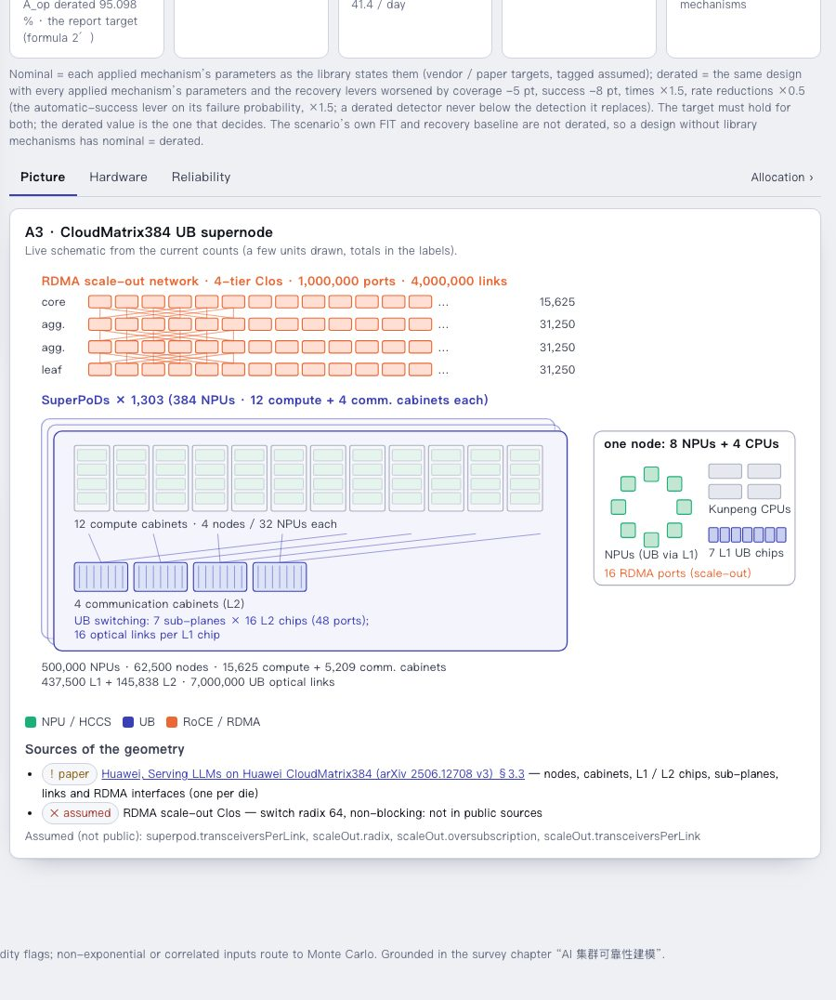
Tabs: Picture (live schematic drawn from the counts), Hardware (the bill of materials — unit, per NPU, counts at 10k / 100k / 200k / 500k with the current N highlighted, interruption FIT per unit, share of the job's hardware interruption rate, what one failure takes out, confidence — then the fault types per unit with editable FIT and the per-NPU contribution) and Reliability (§5); the Allocation › link at the right of the tab bar opens the Allocation page (§7), the only place where strategies run.
4.6 Scenario editor (advanced)
Behind All pages, the scenario editor shows every field of the active scenario: name, structure template, topology and supernode geometry, measures, workload, spares, targets, costs, the recovery editor (presets, pipelines, ladders, the MTTR mixture), the component table with per-class details and the JSON (the reliability block diagram is on the Review page's Checklist tab since v5.2, §9.1). Use it for scenarios that are not built from a template and for fields the first page does not show. The silent-corruption policy and the chain moved to the Mechanism library page (§6.4).
Component classes:
| Field | Meaning |
|---|---|
| count rule | units per gpu / node / rack / zone / supernode scope, or a fixed count |
| failure rate and unit | per hour, per million hours, FIT, AFR, MTBF hours …; a Fleet MTBF anchor converts "N units with fleet MTBF M" into the per-unit rate |
| repair paths | manual MTTR, or dual-path: automatic coverage c, success s, automatic MTTR T_a, manual MTTR T_m (E[R] = c T_a + (1 − c s) T_m) |
| redundancy | series, parallel, k-of-n, standby; switchover success probability, outage per switchover, failed-switch recovery time |
| common cause | β factor and the domain it brings down (node, rack, supernode, sub-plane …) |
| sub-health | entry rate or steady-state probability, duration, performance φ, escalation multiplier, policy tolerate / isolate, detection probability and delay |
| silent corruption | silent events per unit-hour (job-level policy in §6.4) |
| mechanism applicability | fraction of this class's interruptions that replay, process rescheduling and DP elasticity can act on (the reference catalog's per-event flags aggregated per source) |
| infant mortality, lemons, Weibull shape | used by the Monte Carlo job simulation |
Workload and recovery:
Training: job NPUs (or supernodes used), duration, exposed checkpoint save δ, interval model (Young, Daly three-term, Daly exact, Saxena) or a fixed interval, hot-spare nodes and replenishment, recovery path (checkpoint τ/2 or replica one step), measured lost computation W. Inference: replicas required, NPUs per replica (one supernode as the unit), spare replicas, capacity target, SLO window.
Recovery: a pipeline of stages with scale laws (presets baseline-timeout-manual, automated-probe-standby, trainmover-8192-restart, elastic-replica), a ladder of rungs with success probabilities (mindcluster-a3, generic-auto-restart, or custom), or the MTTR mixture R = T_det + T_auto + (1 − p_s) T_manual with T_det = p_d t_auto + (1 − p_d) t_timeout.
Measures, targets, costs, JSON:
Sub-health threshold φ_min (default 0.7: below it sub-health counts as down), communication share for fabric-plane loss, headline measure (compensated / original), goodput and availability targets, $ per NPU-hour. The scenario JSON editor at the bottom shows the full document (schema in docs/scenario.schema.json).
5. Reliability tab (former Training page)
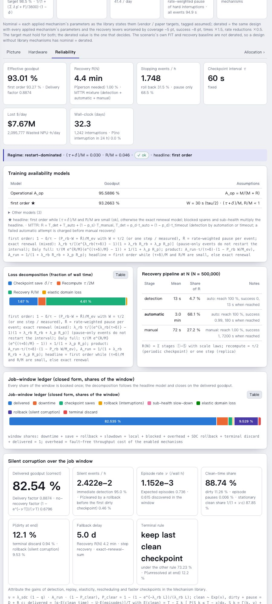
The former Training page is the Reliability tab of the first page. The headline KPIs (A_op, delivered goodput, MTBI, mean pause, interruptions per day) are in the page's KPI strip and are not repeated in the tab; everything else is unchanged.
5.1 Reading the page
- Tiles: effective goodput (performance) with the delivery factor, recovery R(N), stopping events per hour with the rollback / pause-only split, the checkpoint interval, lost $ per day and the wall-clock; the delivered goodput itself is in the KPI strip.
- Regime line: (τ + δ)/M and R/M with the validity badge; the headline model (first order while ok, otherwise exact renewal).
- Models table: A_op, first order ★, product form, exact renewal (with the implied rollback W), Daly full model, with the assumption of each.
- Window ledger: delivered + downtime + saves + rollback + slow-down + elastic domain loss + spares + SDC rollback + terminal discard = 1 (closed form, decomposed with the headline model).
- Mechanism chain per class: applicable fractions, P(replay / elastic / process / global), P(rollback), mean pause, domain loss per event.
- Scale extrapolation: 1/N law with the chain, pause-only events and the SDC window applied per row; caution / invalid badges where the first-order flags fire; a supernodes column under a supernode geometry; the component-share chart shows the 15 largest classes.
5.2 The window ledger
5.3 Silent corruption over the window
6. Mechanism library page
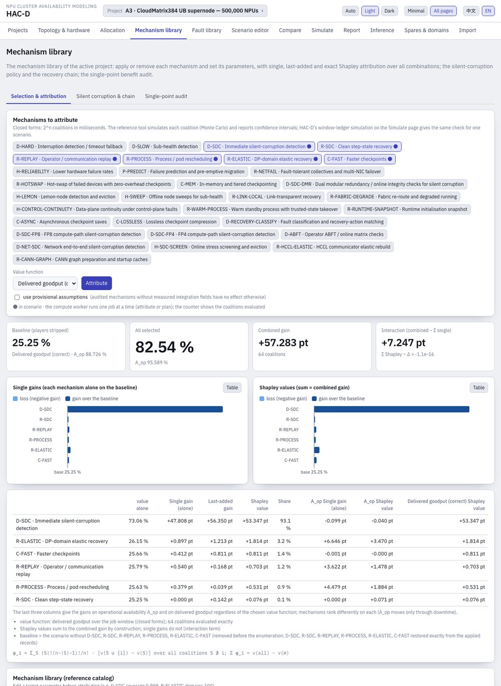
v4: three tabs — Selection & attribution (§6.1–6.2), Silent corruption & chain (§6.4, the single owner of these settings) and Single-point audit (§6.9). The plan-to-target card moved to the Allocation page (Mechanism planner tab, §6.3), next to the strategies that add hardware FIT and recovery limits to the same search. On the topology scenarios the six ReMAP mechanisms are applied by default; editing a parameter of an applied mechanism in the library table re-applies it.
6.1 Mechanism library
The twelve mechanisms of the reference catalog plus seven entries added from the literature (v3.2), each with the change it makes, its prerequisite, its failure path, the confidence of its parameters, an effort score (1–5) used by the planner and, where a method costs throughput even without failures, a fault-free overhead that multiplies the goodput. Sixteen have a scenario transform; three are informational (already in the baseline or no double credit). Chain order per interruption: prediction → network failover → replay → hot-swap → elasticity → process rescheduling → global checkpoint recovery → manual.
| ID | Mechanism | Scenario change (targets of the reference policy) | Effort |
|---|---|---|---|
| D-HARD | interruption detection / timeout fallback | mixture detection 95 % in 10 s → 99.9 % in 1 s | 2 |
| D-SLOW | sub-health detection | 95 % in 5 min → 99 % in 30 s on every sub-healthy class | 3 |
| D-SDC | immediate silent-corruption detection | coverage 0 → 95 %, 1 s; rollback to the last checkpoint + global recovery | 5 |
| R-SDC | clean step-state recovery (requires D-SDC) | detected corruption redoes ≤ 1 s and recovers in 1 s | 4 |
| R-REPLAY | operator / communication replay | 90 % in 5 s, no rollback; failure 10 s | 2 |
| R-PROCESS | process / pod rescheduling | 95 % in 60 s with rollback; failure 120 s | 3 |
| R-ELASTIC | DP-domain elasticity | 98 %; 1 of 50 domains out 180 s; 1 s sync; no rollback; failure 120 s | 5 |
| R-CKPT, R-MANUAL | global checkpoint recovery, manual recovery | baseline (3 min at 99 %, +2 h manual) | — |
| C-FAST | faster checkpoints | τ 300 s / δ 4 s → 60 s / 1 s | 3 |
| H-PROTECT | existing optical / power protection | informational: already in the residual rates | — |
| H-RELIABILITY | lower hardware failure rates | optional rate-reduction factor (no blanket assumption) | 4 |
| P-PREDICT | failure prediction with pre-emptive migration | recall 50 % of impending persistent faults become planned migrations (180 s, no rollback, no detection delay); precision 80 %, false alarms add pauses | 3 |
| R-NETFAIL | fault-tolerant collectives, multi-NIC failover | network-class failures absorbed inside the collective: 95 % in 2 s, no rollback | 3 |
| R-HOTSWAP | hot-swap of failed devices | card / server faults replaced from a spare in 180 s with 90 % success, no rollback | 4 |
| C-MEM | in-memory / tiered checkpointing | δ 0.5 s every 60 s, global recovery −60 s (memory load); 1 % overhead | 3 |
| D-SDC-DMR | dual modular redundancy / online integrity checks | silent detection 99.9 % in 1 s at an 8 % throughput overhead | 4 |
| H-LEMON | lemon-node eviction | interruption rates × (1 − 0.1 × 0.7) | 2 |
| H-SWEEP | offline node sweeps | sub-health entry rate × 0.5, duration × 0.5 | 2 |
6.2 Attribution
The page works on the active project chosen on the Projects page (v5.1; until then it had its own scenario selector; before v4 it defaulted to the 54-event reference catalog — the topology scenarios carry the same per-event mechanism flags, so combinations are reproduced exactly; a warning appears for scenarios that declare per-class fractions). Select the players and the value function (delivered goodput, effective goodput or A_op), press Attribute: the selected mechanisms are stripped from the scenario (baseline), all 2ⁿ coalitions are evaluated with the closed forms, and the report gives single gains (each alone), last-added gains (added to all the others) and exact Shapley values, which sum to the combined gain. Substitutes (replay, elasticity, process rescheduling) show diminishing returns; complements (detection and step recovery) show up only together. The value function evaluates only the training block of each coalition (the block structure, importance measures and cut sets are skipped), so ten players on the 54-event catalog take about a second; the button counts the coalitions evaluated, the compute worker runs one job at a time (an attribution and a plan queue), and Cancel restarts the worker.
6.4 Silent corruption & chain tab
Job-level: immediate detection coverage q and time, fallback discovery delay D (120 h in the reference baseline), optional step recovery (redo at most t_step, recover in t_rec), and the terminal rule of the window: keep the last clean checkpoint (the audited review engine, default) or discard the whole window if it ends unresolved (the reference V4 and ReMAP legacy delivery rule; the two are different metrics and the Reliability tab shows both values). The recovery mechanism chain enables replay (no rollback), DP-domain elasticity (no rollback; one of n domains out for t_el, global sync t_sync) and process rescheduling (rollback), each with success probability and success / failure times; the rung order control sets the order in which the detection-delayed rungs are tried (↑ moves a rung earlier; prediction and network failover always act first) before the global checkpoint recovery. v4 makes this tab the single owner of these settings: switching a rung or a detector on applies its library mechanism, every parameter edit re-applies it with the new parameters (the applied record and the scenario never disagree), switching it off removes it exactly; the fallback delay, the terminal rule and the rung order belong to no mechanism and are edited directly. In the scenario editor, each component class also offers Rate from incident counts: de-duplicated events over units × hours give the rate, FIT, MTBF and the exact Garwood interval (zero events: the one-sided upper bound), and one click writes it into the class as a measured rate with its derivation.
6.9 Single-point audit tab (v3.7)
The library gained the 16 mechanisms of the mechanism audit of 2026-10-14 (link-transparent recovery, fabric re-route with degraded running, fault containment, control-plane continuity, warm standby process, runtime snapshot, asynchronous and compressed checkpoints, recovery-action classification, FP8 / FP4 / ABFT / network silent-corruption detection, online screening, HCCL elastic rebuild, CANN graph caches), each keeping the audit's principle, trigger, workflow, overlap rules and sources. The integration fields the audit leaves null (eligible share, conditional success, failure seconds, overhead; the risk share for FP8 / FP4) keep those mechanisms audit-only until you enter values or switch on "use provisional assumptions" on the Mechanism library page (Selection and Audit tabs; tagged assumed). Mechanisms on the same recovery stage take the minimum, never the sum.
Single-point benefit audit: select mechanisms → Run audit → metric and 口径, baseline → target, single-point gain and cluster-level delta per mechanism; "Download HTML report" writes the standalone page in the structure of the audit deliverable (cards, conventions, flow, stage budget, summary table, sensitivity, one article per mechanism, embedded JSON). The same study across sizes is the v5 report set of the CLI (hacd audit, hacd study and the MCP tools audit_mechanisms, allocation_study write the same reports.
7. Allocation page
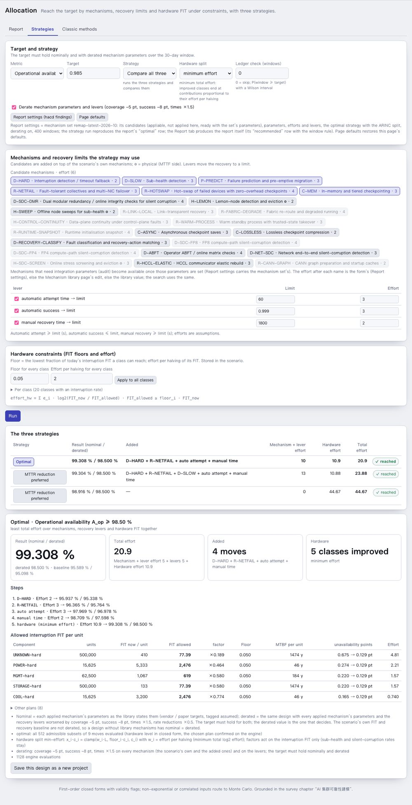
v5.1: three tabs. Strategies (§7.1) and Cross-scale (§7.2) reach a target with mechanisms, recovery limits and hardware FIT under constraints; Classic methods (§7.3–7.11) keeps the v3 budget methods. The former mechanism-only planner tab and the v3.7 allocation study panel are gone: the optimal strategy covers the planner's search, and the cross-scale study is produced by the v5 CLI (hacd findings, §15).
7.1 Strategies tab
All three strategies solve the same problem: reach the target (A_op or delivered goodput over the job window) nominally and with every mechanism parameter and lever derated (coverage −5 pt, success −8 pt, times ×1.5), on top of the scenario's own mechanisms, with three kinds of moves:
- mechanisms from the library (candidates; effort = the library effort score);
- recovery levers moved to a limit: automatic attempt ≥ 60 s, automatic success ≤ 99.9 %, manual recovery ≥ 30 min (limits and efforts 3 / 3 / 2 are editable assumptions);
- hardware: the interruption FIT of each fault class × xᵢ ∈ [floorᵢ, 1]; effort eᵢ·log₂(1/xᵢ), eᵢ = effort of halving the class's FIT (default 2), floorᵢ = the lowest reachable fraction of today's FIT (default 0.05). Floors, efforts and fixed classes are stored in the scenario (
component.allocation).
| Strategy | Rule |
|---|---|
| Optimal | least total effort (mechanisms + levers + hardware) over the subsets of the candidate moves: exact enumeration up to 10 moves for A_op (the hardware level in closed form, the chosen plan confirmed on the engine) and 6 for delivered goodput, greedy descent on the total effort beyond; the cheapest plans are listed as alternatives |
| MTTR reduction preferred | recovery side first: the mechanism or lever with the largest gain per effort is added until the target holds or nothing gains; the remaining gap goes to hardware |
| MTTF reduction preferred | hardware first, down to the floors; only if the floors are not enough are mechanisms added (physical ones, then the recovery side, evaluated with the hardware at its floors), after which the hardware is relaxed again |
Hardware split. For a level L found by bisection on the engine, xᵢ·cᵢ = clamp(wᵢ·L, floorᵢ·cᵢ, cᵢ), where cᵢ = λᵢ·p̄ᵢ is the class's pause contribution (rate × mean pause per event of its mechanism chain). Minimum effort (default) uses wᵢ = eᵢ and minimises Σ eᵢ log₂(1/xᵢ) for the A_op budget; AGREE uses wᵢ = units × importance and reallocates the slack of the classes under budget; ARINC uses wᵢ = cᵢ (one uniform factor). For A_op the running fraction is exactly 1/(1 + (Σ xᵢcᵢ + F)/3600) (F: isolation, false-alarm and detected-silent-corruption pauses), which gives the level in closed form. When the target already holds, the result reports the hardware slack: the uniform factor by which every interruption FIT could grow before the target is lost.
Outputs: the three strategies side by side (result nominal / derated, added moves, efforts, reached or not); for the selected one the steps, the allowed interruption FIT per class (current, allowed, factor, floor, allowed MTBF per unit, unavailability points before → after, effort), the alternatives (optimal), an optional window-ledger check (P(window ≥ target) with its Wilson interval) and Save this design as a new project.
| A3 · CloudMatrix384, 500,000 NPUs, A_op ≥ 98.5 % | Optimal | MTTR preferred | MTTF preferred |
|---|---|---|---|
| result nominal / derated | 99.308 / 98.500 % | 99.304 / 98.500 % | 98.916 / 98.500 % |
| mechanisms and levers added | D-HARD, R-NETFAIL; automatic attempt 60 s, manual 30 min | D-HARD, R-NETFAIL, D-SLOW; the same levers | none |
| hardware | five classes: UNKNOWN ×0.19, POWER ×0.46 (5,333 → 2,476 FIT per cabinet), MGMT ×0.58, STORAGE ×0.58, COOL ×0.77 | the same five classes (within 0.01) | fifteen classes, e.g. UNKNOWN ×0.05 (floor), POWER ×0.11 (5,333 → 599 FIT per cabinet), MGMT ×0.14 |
| effort mechanisms + levers + hardware = total | 5 + 5 + 10.90 = 20.90 | 8 + 5 + 10.88 = 23.88 | 0 + 0 + 44.67 = 44.67 |
Reading: at 500,000 NPUs the default design gives 95.59 % (95.10 % derated); detection in 1 s, network failover and two recovery limits lift the derated value to 97.60 %, and cutting the five classes no recovery rung covers (unattributed ×0.19 … cooling ×0.77) closes the rest. Hardware alone needs fifteen classes improved, the unattributed interruptions down to the 0.05 floor. docs/ALLOCATION_STRATEGY_V4.en.html walks through this case and compares it with the v3.0 and v3.7 methods on the sixteen built-in cases (four templates × four scales).
7.2 Cross-scale tab
The same target, strategy and constraints at several sizes (default the built-in 10k / 100k / 200k / 500k; the template's hardware counts follow N): per size the baseline, the result, the moves added, the hardware effort, the total effort and the largest hardware tasks or the slack.
| Optimal, A_op ≥ 98.5 % | 10,000 | 100,000 | 200,000 | 500,000 |
|---|---|---|---|---|
| A2 · RoCE | slack ×18.7 | slack ×1.82 | hardware 1.11 | D-HARD + levers + hardware 8.27; total 15.27 |
| A3 · CloudMatrix384 | slack ×15.5 | slack ×1.50 | automatic attempt 60 s; total 3.00 | D-HARD + R-NETFAIL + levers + hardware 10.90; total 20.90 |
| Atlas 950 | slack ×17.7 | slack ×1.73 | hardware 1.78 | D-HARD + R-NETFAIL + levers + hardware 6.03; total 16.03 |
| Atlas 960E | slack ×18.9 | slack ×1.84 | hardware 0.97 | D-HARD + levers + hardware 7.43; total 14.43 |
Reading: the six default mechanisms carry every topology to 98.5 % up to 100,000 NPUs (slack ×1.50–1.84); at 200,000 one lever or a little hardware closes the gap, at 500,000 every topology needs mechanisms, recovery limits and hardware. The topology matters through its hardware mix — the UB fabric adds about 133 FIT per NPU in A3, 75 in Atlas 950 (72 LRS per 64-NPU cabinet, 2 optical links per NPU) and 34 in Atlas 960E (few blade chips, assumed), and the 32-NPU cabinets of A3 double its facility FIT — so A3 needs the largest effort for the same target and Atlas 960E the smallest (as far as its assumed switch count holds).
7.3 Classic methods tab
The v3 budget methods, unchanged:
The classic tab turns a target into requirements: how much silent-corruption detection is needed, how the allowed loss splits over the ledger lines, which interruption rate each component class may have, how long each recovery stage may take and, for an availability target, what unavailability each class may contribute. Everything recomputes as you edit; the only controls are the inputs below.
7.4 Inputs
| Control | Meaning | Typical value |
|---|---|---|
| Goodput target G* | the delivered (or effective) goodput the job must reach over its window | 0.90 at 100k–200k cards; ReMAP's target table says 0.99 / 0.95 / 0.90 / 0.80 at 10k / 100k / 200k / 500k |
| Target basis | Delivered goodput (正确有效产出; default when the scenario carries silent corruption) or Effective goodput (performance only) | delivered |
| Availability target A* | hardware-level availability to split over the classes (§7.5, item 6) | 0.999 |
| Method | how the interruption budget is split over the classes (§7.6) | ARINC |
| Restart share | share of the loss budget given to the recovery term in the balanced split | 0.5 |
| Split (loss-budget card) | proportional to the current ledger, equal over the active lines, or custom weights (editable in the table) | proportional |
| Class weights table | AGREE importance, feasibility weight, cost coefficients a and b, fixed classes; saved in the scenario | 1 · 2 for assumed rates · 1, 1 · none |
7.5 What the classic tab computes, top to bottom
- Silent corruption and the delivered target (delivered basis). The delivered target G_d is divided by the delivery factor f = delivered ÷ effective and by the sub-health / spares / local factor φ to give the effective and the headline (interruption) targets. The card first asks whether the hardware alone can reach G_d (every failure rate → 0 under the current silent-corruption policy). If not, it reports the smallest immediate detection coverage q* that reaches the target with the hardware as is and the longest fallback discovery delay D* that reaches it at the current coverage, and computes the budgets below with the coverage raised to q*. If even q = 1 cannot reach the target, the budgets assume q = 1 and show what the interruption side must deliver on top (the note says so).
- Loss budget over the window ledger. The allowed loss (1 − G*) × window, in per cent and hours, is split over the nine ledger lines (downtime, checkpoint saves, rollback, sub-health slow-down, elastic domain loss, spares exhausted, mechanism overhead, silent-corruption rollback, terminal discard) by the chosen weights; each line shows current, allowed, excess and the levers that move it. The split is an accounting target, not a proof that each line can be reached independently.
- Budget tiles (method-independent, first order with the Young interval): the loss budget 1 − G_headline against the current hard-interruption loss; keep R, tighten λ gives the required MTBI and its improvement factor; keep λ, tighten R the required recovery time; the balanced split shares the budget by the restart share. When the current loss is already within the budget the tiles show slack (factors below 1).
- Allowed failure rate per component class: the required job interruption rate λ* split by the method; per class the current aggregate rate, the allocated rate, the allowed rate per unit (per 10⁶ unit-hours), the improvement factor (current ÷ allocated; below 1 means the class may degrade) and a feasibility flag (ok, or tighter than the best known rate of that class).
- Allowed time per recovery stage: the required recovery time split over the stages (detection, automatic attempt, manual share, or the pipeline's stages) in proportion to the current times above their floors.
- Availability target split (when A* is set): ln Aᵢ = (wᵢ/Σw) ln A* per class, with the implied allowed rate and MTTR.
7.6 Methods
| Method | Rule | Use when |
|---|---|---|
| Equal | λᵢ* = λ*/m | no information on the subsystems |
| ARINC | λᵢ* ∝ current λᵢ | current proportions are trusted; everybody improves by the same factor |
| AGREE | Rᵢ = 1 − (1 − R*^{nᵢ/N}) / wᵢ, complexity × importance × duty | module counts and importance weights are known |
| Feasibility of improvement | weights by how improvable a class is (assumed values weigh more) | mixed confidence |
| Minimum effort (Albert) | worst classes brought to a common level | few classes dominate |
| Cost-optimal | minimise Σ aᵢ (λᵢ⁰/λᵢ)^{bᵢ} s.t. Σ λᵢ = λ* (Lagrangian, floors at 5 % of the current rate) | cost curves per class |
The methods differ only in the per-class split; the tiles, the loss budget and the stage budgets are method-independent. Equal, AGREE and feasibility coincide when every class has the same unit count, importance and feasibility weight (the page says so); minimum-effort and cost-optimal keep the current rates when the budget is already met. Edit the class-weights table to make them differ: raise the importance of a class to give it more of the AGREE budget, give assumed rates a higher feasibility weight, set cost coefficients for cost-optimal, and mark classes that cannot be improved as fixed.
7.7 Reading the tables
- An improvement factor ×1.6 on a class means its interruption rate must fall to 1/1.6 of today's; ×0.98 means it may grow by 2 %.
- "tighter-than-best-known" means the allocated rate is below the best rate the library knows for that class: move budget to other classes (weights, fixed) or use mechanisms instead.
- The loss-budget excess column says which line to attack first: on the catalog at 100,000 cards the silent-corruption rollback line alone is 21 points over its allowance, so detection (D-SDC) comes before any hardware change.
- Slack case (current loss ≤ budget): the rate table shows how far each class may degrade and the stage table the allowed times; both serve as acceptance limits.
7.8 Worked example A: 54-event catalog, 100,000 cards, 90 % delivered
| Quantity | Value |
|---|---|
| delivered goodput today (q = 0, D = 120 h) | 62.61 % |
| reachable by hardware alone | 64.30 % → not feasible |
| immediate detection needed q* (hardware as is) / fallback delay needed D* (q = 0) | 89.81 % / 11.3 h |
| delivery factor at q* → effective target → headline target | 0.9504 → 94.69 % → 94.73 % |
| loss budget over the ledger: allowed vs current | 10 % = 72 h vs 37.39 % = 269 h |
| largest excess lines | silent-corruption rollback +21.45 pt (154 h), terminal discard +2.07 pt, downtime +1.84 pt |
| budget tiles at q*: allowed vs current hard loss | 5.27 % vs 5.25 % (slack) |
| keep R: MTBI ≥ / keep λ: R ≤ / balanced | 2.9 h (×0.99) / 4.4 min / 3.2 h · 5.1 min |
| rate table (ARINC), every class | ×0.98 (may degrade 2 %; CORE interruptions 0.0467 → 0.0478 /h = 0.478 per 10⁶ card-hours) |
| stage table | 13 s / 3.0 min / 72 s → 13 s / 3.0 min / 73 s (×0.99) |
Reading: the requirement is detection, not hardware. Raise immediate silent-corruption detection to about 90 % (or discover corruption within 11 h); the interruption side already meets 90 % and the rate and stage tables are acceptance limits.
7.9 Worked example B: the same catalog, 95 % delivered (out of reach of detection alone)
| Quantity | Value |
|---|---|
| reachable with q = 1 | 94.69 % → "out of reach even with 100 % immediate detection"; budgets assume q = 1 |
| budget tiles: allowed vs current hard loss | 4.96 % vs 5.25 % |
| keep R: MTBI ≥ / keep λ: R ≤ | 3.2 h (×1.08) / 3.9 min |
| rate table (ARINC), every class | ×1.06 (CORE interruptions 0.0467 → 0.0441 /h) |
| stage table | 13 s / 2.7 min / 64 s (×1.13) |
Reading: full detection plus a 6 % lower interruption rate, or a 13 % faster recovery, reaches 95 %. The Strategies tab (Allocation page, the optimal strategy with the hardware fixed) says whether the library mechanisms (replay, elasticity, process rescheduling, faster or in-memory checkpoints, hot-swap) can supply that instead of hardware: ReMAP's six-mechanism set reaches 94.72 % at 100,000 cards and HAC-D's ten-player set 94.64 %, so 95 % needs a hardware or checkpoint-design change on top.
7.10 Worked example C: three-class baseline, 50,000 cards, 90 % delivered
On the reference fixture ref-three-classes-100k (not in the app’s list since v4.1): hacd example ref-three-classes-100k writes it as JSON, Import JSON loads it, then set 50,000 cards.
| Quantity | Value |
|---|---|
| delivered goodput today / reachable by hardware alone | 76.67 % / 77.88 % → not feasible |
| immediate detection needed q* / fallback delay needed D* | 71.54 % / 32.0 h |
| at q*: budget vs current hard loss; MTBI ≥ ; R ≤ ; rates | 3.29 % vs 3.19 %; 5.6 h (×0.96); 4.8 min; ×0.94 |
| with the reference's 95 % detection applied (Mechanisms → D-SDC → Apply to scenario) | delivered 95.43 % |
| then: budget vs current; MTBI ≥ ; R ≤ ; rates; stages | 8.81 % vs 3.19 %; 89 min (×0.25); 24 min; ×0.25; ×0.18 |
Reading: with 95 % detection the interruption side has a four-fold margin at 50,000 cards; the tables give the limits within which the hardware and the recovery may degrade while 90 % still holds.
7.11 From budgets to requirements
- Hand the per-class allowed rates (FIT per unit) to the hardware owners as acceptance criteria, the stage times to the platform team, q* / D* to the silent-corruption detection team and the loss-budget lines to whoever owns each lever.
- Check the mechanism route with the Strategies tab (derating; an infeasible result shows the best design found) and verify with the window-ledger simulation (Review › Simulation, or the strategies' ledger check: P(window ≥ target) with its Wilson verdict).
- Re-run after every measurement; the page recomputes instantly.
hacd allocate <s> --goodput 0.9 --basis delivered --method arincand the MCP toolallocate_scenario(withlossMethodandlossWeights) print the same tables for scripts and agents;docs/ALLOCATION_PRACTICE.mdholds the full procedure.
8. Fault library page
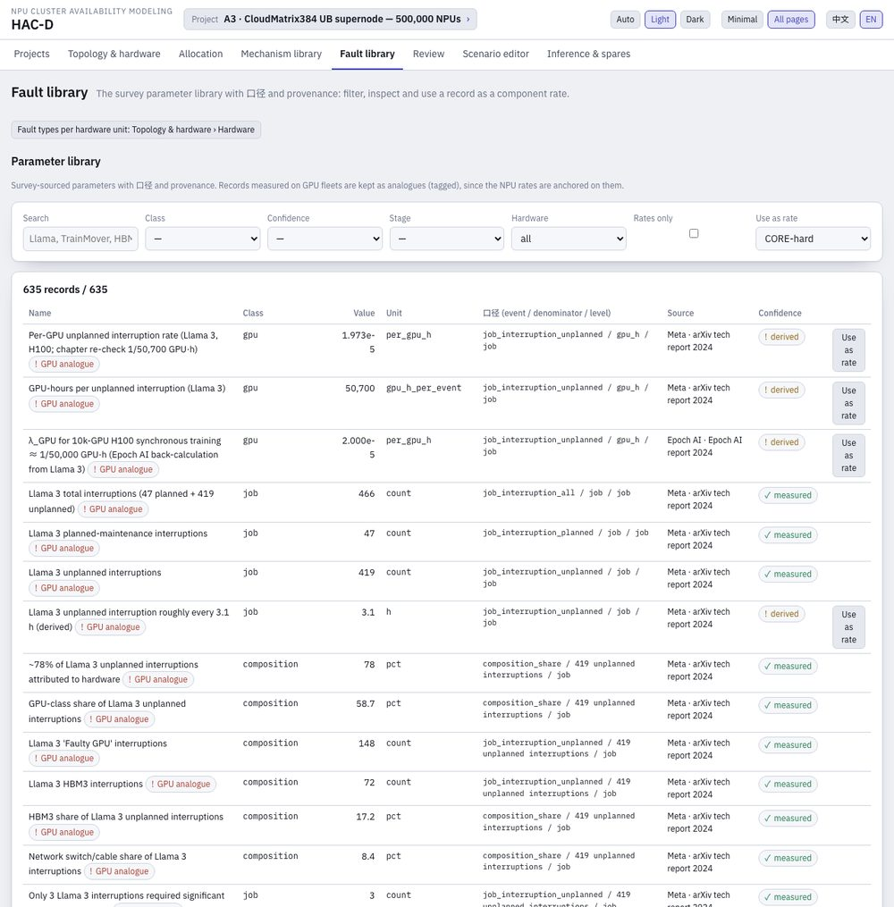
635 survey-sourced records (failure rates, MTTR stage times, SDC rates, spare ratios, checkpoint overheads, Ascend sources) with 口径, provenance and confidence. Filter by class, kind, confidence, stage and hardware, then Use as rate on a component of the active scenario. The 357 records measured on GPU fleets are kept as analogues and tagged GPU analogue (the NPU rates are anchored on them; no public Ascend failure data exists); the hardware filter shows NPU / general records only, or the analogues only.
Since v5.2 the 60 per-unit fault types (the 54 catalog events on their hardware units plus the six RoCE analogues, with the catalog FIT per card, the cards per unit, the FIT per unit, the mechanism flags and the persistence) are shown once, on the Hardware tab of the Topology page (§4.3), where the scenario's values and overrides are edited; the button at the top of this page opens it.
9. Review page
One place for "is the design right and what do I hand over": the eleven-item checklist with the exports, the Monte Carlo verification and the sensitivity of the active project, in three tabs. The tab is a project setting.
9.1 Checklist tab
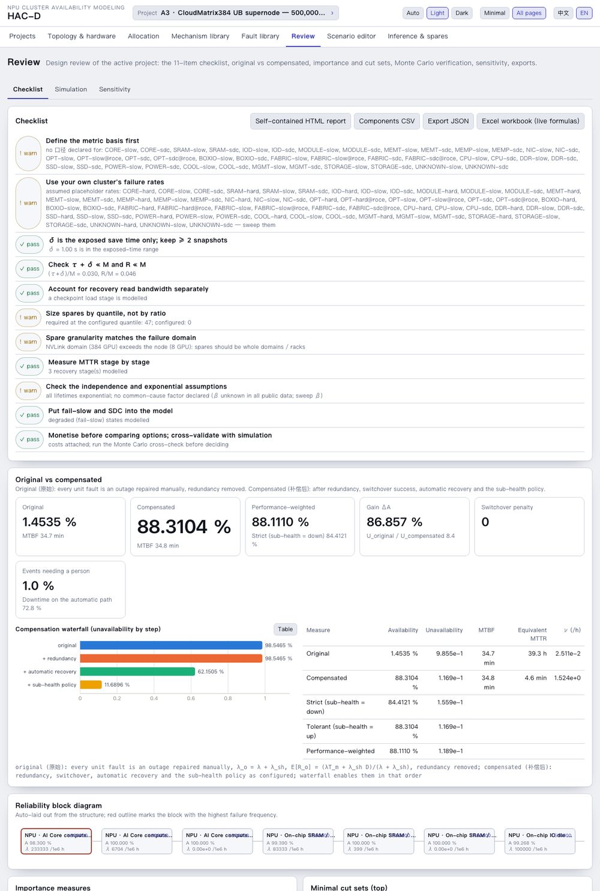
| # | Checklist item (survey design review) |
|---|---|
| 1 | Define the metric basis (口径) first |
| 2 | Use your own cluster's failure rates |
| 3 | δ is the exposed save time only; keep ≥ 2 snapshots |
| 4 | Check τ + δ ≪ M and R ≪ M |
| 5 | Account for recovery read bandwidth separately |
| 6 | Size spares by quantile, not by ratio |
| 7 | Spare granularity matches the failure domain |
| 8 | Measure MTTR stage by stage |
| 9 | Check the independence and exponential assumptions |
| 10 | Put fail-slow and SDC into the model |
| 11 | Monetise before comparing options; cross-validate with simulation |
Importance measures (Birnbaum, Fussell-Vesely, RAW, RRW) rank the blocks; the Excel export writes a workbook with live formulas (Inputs, Structure, Results, Formulas) that recalculates independently of HAC-D.
9.2 Simulation tab
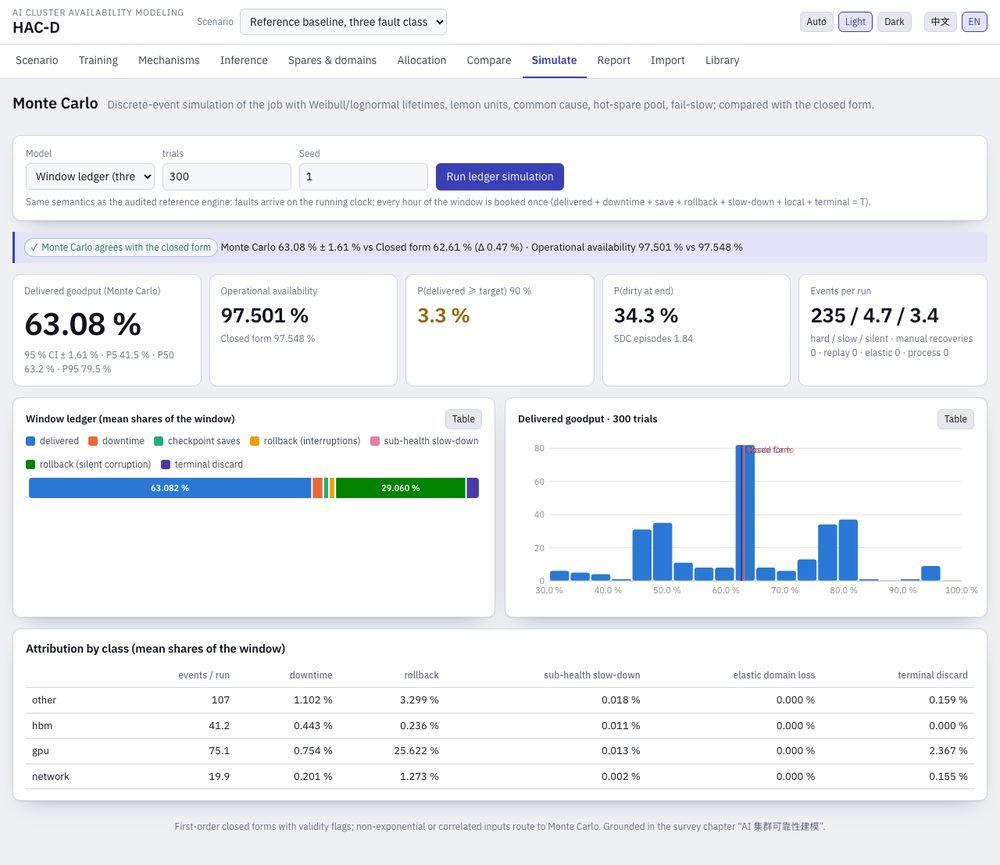
Window ledger (default): a discrete-event simulation of one job window with the three fault classes, the mechanism chain (Bernoulli applicability), sub-health detection and isolation, silent corruption (immediate detection, step recovery, fallback discovery, clean-checkpoint retention, terminal discard) and checkpoint batching; the same semantics as the audited reference engine, every hour booked once. Job simulation: unit-level Monte Carlo with Weibull / lognormal lifetimes and repairs, infant mortality, lemon units, β-factor common cause with blast radius, finite hot-spare pool, redundancy groups and fail-slow. Both compare with the closed form and flag disagreement; prefer the simulation when it disagrees. Means carry Student-t 95 % half-widths and type-7 quantiles; P(delivered ≥ target) and P(unresolved at end) carry Wilson 95 % intervals, which cover the sampling error only.
9.3 Sensitivity tab
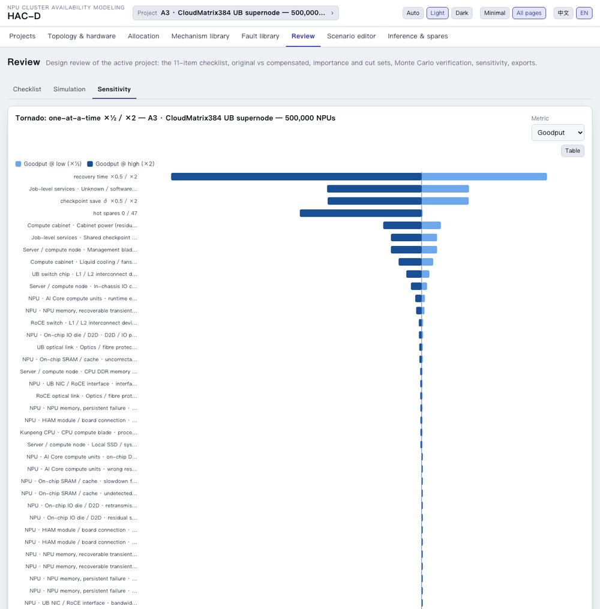
The tornado halves and doubles each component rate, the recovery time, the checkpoint δ, the hot spares and the common-cause β, for goodput, delivered goodput, availability, lost $/day or MTBI. Use it for parameter sensitivity; use the Mechanism library page for the value of discrete mechanisms.
10. Importing spreadsheets and comparing projects
Both are tabs of the Projects page (§3.4), beside the list and the "new from template" tab.
10.1 Import tab
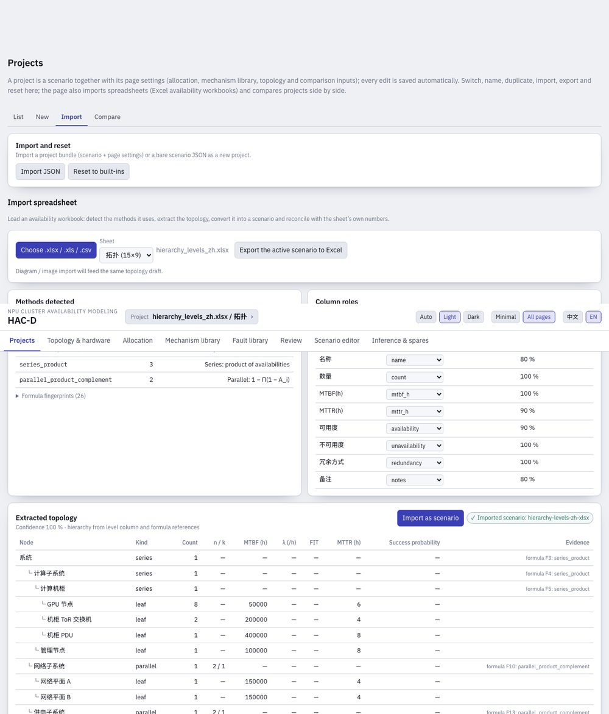
Formulas are fingerprinted into 18 method tags: availability from MTBF / MTTR or λ / MTTR, unavailability λ·MTTR, FIT → λ, AFR → MTBF, series product, rare-event sum, parallel complement, k-of-n explicit sum / COMBIN / BINOM.DIST, standby, switchover weighting, MTTR auto / manual mixture, Markov MMULT / MINVERSE, percent and complement conversions, power of count. The topology is extracted from level columns, indentation, outline levels and the formula dependency graph into a draft, converted into a scenario and reconciled with the sheet's own numbers. Nine synthetic fixture workbooks are the test set; real workbooks tune the header lexicon.
10.2 Compare tab
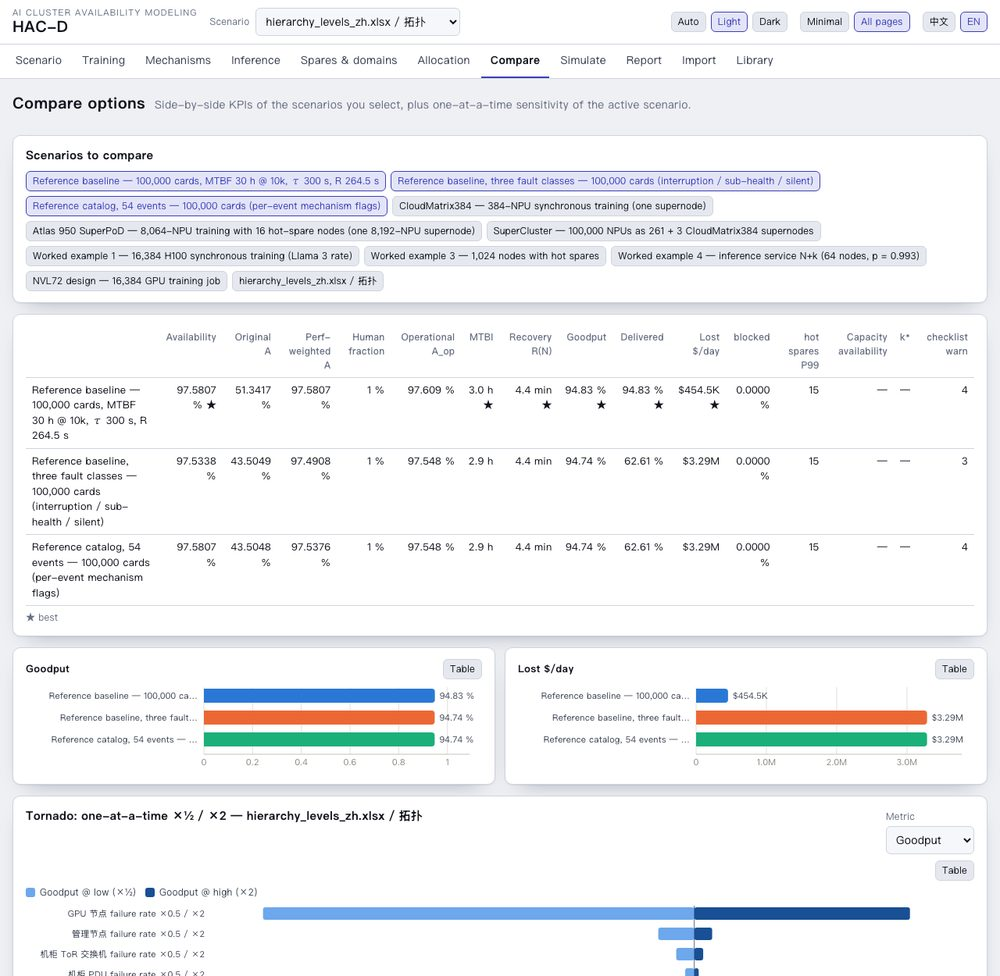
Pick the projects to compare (default: the first three); the set is a setting of the active project. Use the Review page's Sensitivity tab (§9.3) for parameter sensitivity and the Mechanism library page for the value of discrete mechanisms.
11. Inference & spares page
Behind All pages: the two former pages as two sections of one page, both reading the active scenario.
Inference: an N+k replica pool with one replica = a node, rack or supernode; replica rate λ_r = Σ classes at or below the replica scope, MTTR_r rate-weighted, u_r = λ_r MTTR_r / (1 + λ_r MTTR_r), service-up availability 1 − u_r^{n+k}, capacity availability Σ_{j≤k} C(n+k, j) u_r^j (1 − u_r)^{n+k−j}, the k required for the target, replica failures per day and idle spare NPU-hours. Under a supernode preset the page sizes 100k / 200k / 500k-NPU clusters in supernodes (for CloudMatrix384 analogue rates: 261 / 521 / 1,303 supernodes, k* = 9 / 14 / 27 spares for 99.9 % capacity availability).
Spares & domains: hot spares by binomial quantile (ByteRobust), by Poisson with replenishment time (Meta), units in the repair pipeline and replacements over the job, a required-spares map over node MTBF × MTTR, and spare granularity matched to the failure domain.
12. Methods reference
Full derivations: docs/MODEL_REFERENCE.md (§1–§23) and docs/TRAINING_AVAILABILITY_FORMULAS_AND_COMPARISON.md; the comparison with the reference engine and ReMAP in docs/TOOL_COMPARISON.md. Times in seconds unless noted.
12.1 Structure
12.2 Repair paths and switchover
12.3 Sub-health
12.4 Original vs compensated
12.5 Checkpointing and goodput
12.6 Mechanism chain
12.7 Silent corruption (finite window)
12.8 Attribution and planning
12.9 Allocation and spares
12.10 v3.5 additions: terminal rule, statistics, bounds, loss budget, incident rates
12.11 v4 additions: topology counts, per-unit fault types, allocation strategies
13. Validation and accuracy
13.1 Golden vectors and tests
282 golden vectors computed independently in Python (mpmath quadrature, exact CTMC solutions, renewal equations on a grid, SciPy distributions) from the model specification without reading the engine: 143 for v1, 26 for v2, 21 for v3 (chain with its rung order, mixed renewal, silent corruption under both terminal rules) and 92 for the v3.5 statistics (Student-t and chi-square quantiles, incomplete gamma and beta, Wilson and Garwood intervals). The suite has 817 core tests, 52 importer tests, 30 agent tests and 28 report tests (v4 added 126 topology goldens, v5 the 29 cases of G1–G6 for the budget primitives, v6 the five cases of G7 for the 口径 normaliser — unit conversions and per-class sums to 1e-9); node packages/reports/test/reproduce.mjs regenerates the six Ascend reports byte for byte.
13.2 Cross-check with the reference engine
The audited reference engine (one training job, 30-day discrete-event simulation, 4000 trials per scenario) and HAC-D on the same baseline: 10,000-card hard MTBF 30 h with linear scaling, τ 300 s, δ 4 s, detection 95 % in 10 s else 60 s, recovery 180 s at 99 % else +2 h manual.
| Cards | Reference A_op | HAC-D A_op | Reference useful (hard only) | HAC-D exact renewal | Reference delivered (three classes) | HAC-D delivered |
|---|---|---|---|---|---|---|
| 10,000 | 99.75 % | 99.75 % | 98.3 % | 98.3 % | 93.33 ± 0.26 % | 93.33 % |
| 100,000 | 97.56 % | 97.55 % | 94.99 % | 94.98 % | 62.56 ± 0.46 % | 62.61 % |
| 200,000 | 95.24 % | 95.22 % | 91.43 % | 91.45 % | 45.87 ± 0.40 % | 45.66 % |
| 500,000 | 88.88 % | 88.88 % | 81.84 % | 81.88 % | 25.24 ± 0.26 % | 25.32 % |
Single-mechanism gains and the six-player Shapley values agree within the reference's sampling error; the elastic value differs most (0.83 vs 0.25 points at 100k) because the reference's elastic path desynchronises its fault stream (±0.3–0.6 points on its paired deltas). The first-order goodput is 0.2 / 0.4 / 2.4 points low at 100k / 200k / 500k, which is why the headline rule switches to the exact renewal form when the flags fire.
13.3 Version 1 closed form and the ReMAP bridge
The reference engine's version-1 closed form (TOR = A·τ/L·z/(e^z − 1)·S) is HAC-D's exact renewal model: scripts/ref-compare-v1.ts reproduces its published goodput and availability at 10k–500k cards to 1e-16. ReMAP vendors the audited review engine byte-identically; scripts/remap-bridge.ts runs it on any HAC-D scenario, and on the 54-event catalog with ReMAP's seeds (4000 windows) it returns the published baseline exactly (62.56 % ± 0.46, A_op 97.556 %) against HAC-D's closed form (62.61 %, 97.548 %). scripts/remap-param-check.ts confirms that the catalog example carries the same event FITs, flags, baseline settings and mechanism parameters as ReMAP's reference audit.
14. Recommended workflow
docs/WORKFLOW.md and docs/ALLOCATION_PRACTICE.md.- Topology and scale: pick the template that matches the design (A2, A3, Atlas 950, Atlas 960E), set the NPUs in the job and the hardware parameters; check the assumed fields.
- Hardware and fault types: read the bill of materials across 10k–500k; replace library FIT by measured values where you have them (per unit, with the incident-count estimator of the scenario editor for the interval).
- Mechanisms: keep or change the six defaults, set their parameters and the chain order, check the silent-corruption policy; attribute (Shapley) to see what each one contributes.
- Evaluate: KPI strip and Reliability tab — A_op, delivered goodput, MTBI, the regime flags, the window ledger.
- Allocate: set the target and the constraints (FIT floors, effort per halving, candidate mechanisms, recovery limits), compare the three strategies, then run them across sizes; hand the allowed FIT per unit to the hardware owners and the mechanism set and recovery limits to the platform team.
- Verify and report: the ledger check (P(window ≥ target) with its Wilson verdict), the Review page's Simulation tab for non-exponential or correlated inputs, its Checklist tab and exports; then measure in production and loop.
Internal inputs (v6): hardware FIT tables, new topologies and new mechanisms enter through worksheets and hacd ingest — stage, validate, dry-run, diff, promote — on the offline bundle inside the network that holds the documents (§15.5; runbook docs/markdown/INGEST_RUNBOOK.md).
15. CLI, MCP and files
15.1 CLI
| Command | What it does |
|---|---|
hacd examples, hacd example <id> | list / print a built-in scenario (the v3.7 GPU examples stay printable by id) |
hacd topology <a2-roce|a3-ub384|a950-ub2|a960e-ub> --npus 10000 [--sizes 10000,100000,200000,500000] [--no-scale-out] [--fill proportional|full-pod] [--radix 64] [--variant a950-8k] [--count ubPodSwitch=200,…] [--out s.json] | v4 bill of materials, hard FIT per NPU by unit at each size, the scenario file; --variant picks an Atlas 950 SuperPoD variant, --count sets user counts per row (v4.3) |
hacd strategy <s> | --template a3-ub384 --npus 50000 [--strategy optimal|mttr-first|mttf-first] --target 0.998 [--metric aOp|delivered] [--split min-effort|agree|arinc] [--sizes …] [--trials 200] | v4 allocation strategies (all three when no strategy is given), across sizes with --sizes |
hacd eval <scenario.json> | evaluate: availability, MTBF, goodput, spares, inference, checklist |
hacd compare a.json b.json … | side-by-side KPIs |
hacd allocate <s> --goodput 0.9 --basis delivered --method arinc | budgets per class and stage; silent-corruption levers |
hacd tornado <s> --metric delivered | one-at-a-time sensitivity |
hacd simulate <s> --reps 100 | unit-level Monte Carlo vs the closed form |
hacd ledger <s> --trials 300 --target 0.9 | window-ledger simulation vs the closed form |
hacd rate <events> <unitHours> [--confidence 0.95] | failure rate from incident counts with the exact Garwood interval (zero events: upper bound) |
hacd import-remap <inputs.json> --cards 100000 --out s.json | a ReMAP / reference event catalog as a HAC-D scenario at catalog granularity |
node --import tsx scripts/remap-bridge.ts <s> --trials 400 --export req.json | run ReMAP's vendored review and V4 engines on the scenario, compare with HAC-D, export the engine inputs and a ReMAP audit request |
hacd mechanisms <s> --players D-SDC,R-REPLAY | single / last-added / Shapley gains |
hacd plan <s> --target 0.9 --trials 200 | cheapest feasible mechanism set, necessary mechanisms, scan, verification |
hacd audit <s> --provisional --html audit.html | single-point benefit audit of the selected mechanisms with a standalone HTML report (v3.7) |
hacd study <s> --sizes 10000,100000,200000,500000 --target 0.985 --html study.html | cross-scale allocation study with a standalone HTML report (v3.7) |
hacd measures <s> | original vs compensated and the waterfall |
hacd methods book.xlsx, hacd import-excel book.xlsx --out s.json, hacd export-excel s.json | Excel method report, import, export |
hacd schema | JSON Schema of the scenario file |
v5 report pipeline (records by built-in id, JSON path or packages/core/data/records/<id>.json; details in docs/markdown/USER_GUIDE.md, section “v5 CLI”) | |
hacd records, hacd schema --record|--mechanisms|--rates | list the topology records, mechanism sets and failure-rate overrides; print the JSON Schema of each input record |
hacd study --record a960e --scales 10000,100000 --permutations 300 --out-dir docs/data | Shapley study of the mechanism set on the record's bare scenario (Findings Table 7, hierarchy) |
hacd findings --record native950,ubl128 [--rates f.json] [--mechanisms m.json] [--scales …] [--target 0.985] [--trials 400] [--study-dir dir] [--out docs] [--data-out docs/data] | hierarchical MTBF / MTTR budget, studies and mechanism hierarchy → sidecar JSON and the bilingual Findings pages (+ Methodology); the footer echoes the command, ids, options and engine version |
hacd methodology --data docs/data, hacd bom --records … --npus 100000 | Methodology page from a findings run's sidecar JSON; bill of materials of every scale-out variant |
hacd budget --record cm384 --scale 200000, hacd prune --study-dir dir --out pruned.json | one architecture × scale budget (today / required / recommended); the set's verdict lists re-derived by the pruning rule |
v6 ingest (worksheets → staged records → gates → KPI delta → promote; details in docs/markdown/USER_GUIDE.md, section “v6 ingest”, and §15.5) | |
hacd ingest template <kind>, hacd ingest fields <kind> | --vocab | an example worksheet of a kind (topology, fault-rates, device-fit, koujing-mapping, mechanisms, mechanism-proposal) that parses as it is; the field paths and the closed vocabularies |
hacd ingest worksheet ws.md… --out staging, hacd ingest import-fit book.xlsx --id x, hacd ingest normalize --devices d --mapping m --id x | worksheets → staged JSON (a template, unit or mechanism the engine lacks becomes an extension request); a spreadsheet of device rates → device table; device table × 口径 mapping → failure-rate override with derivations |
hacd ingest validate staging, hacd ingest dry-run --record r [--rates f] [--mechanisms m] [--scales …] | the gates beyond the schemas (exit 1 on errors); the KPI rows of the budget at the scales |
hacd ingest diff --before-record native950 --after-record r [--after-rates f] --out staging/delta | input changes with provenance, KPI rows before / after and Δ → delta.{json,md,zh.md,html}, the bilingual review page |
hacd ingest promote staging [--data dir] [--force] | validated records into the data folder under their own ids (public ids refused), one CHANGELOG.md line each |
hacd ingest extract doc.txt --kind topology --provider openai-compatible --base-url … --model … [--mode guided_json] --source-type vendor | the model step: evidence cards, review queue, run log, draft worksheet (§15.5) |
All commands accept --json.
15.2 MCP tools
list_examples, get_example, scenario_schema, evaluate_scenario, compare_scenarios, allocate_scenario, tornado_scenario, simulate_scenario, library_search, excel_method_report, import_excel_scenario, export_excel, mechanism_library, mechanism_report, apply_mechanisms, simulate_ledger, plan_mechanisms, audit_mechanisms, allocation_study, estimate_rate, v4 topology_bom and allocation_strategy.
15.3 Built-in examples
Since v4.1 the built-in examples are the topology templates (four since v4.2); the scale is a parameter (the page's scale chips 10k / 100k / 200k / 500k or any N, hacd example <id> --npus N, the MCP tool get_example with npus), so no separate per-size or per-design examples exist.
| ID | Scenario (10,000 NPUs, per-unit fault types, the six default mechanisms) |
|---|---|
topology-a3-ub384 | A3 · CloudMatrix384 UB supernode (paper geometry) |
topology-a2-roce | A2 · Atlas 800T A2 servers (8 NPUs) on a RoCE Clos |
topology-a950-ub2 | Atlas 950 · UB 2.0 SuperPoD (1,024 NPUs (product-page spec), cabinet mesh + optical Clos; 8,192 / UB-Mesh 4D / two-level selectable) |
topology-a960e-ub | Atlas 960E · NPO SuperPoD (56 + 14 cabinets of 72 NPUs, LinkBlade + LinkDevice, four-plane scale-out) |
Reference fixtures, not listed: ref-catalog-100k (the 54-event catalog per card, 100,000 cards, per-event replay / process / elastic flags) and ref-three-classes-100k (the reference's confirmed three-class baseline) stay reachable by id for the reference and ReMAP cross-checks (hacd example, get_example, scripts/remap-bridge.ts). The v2 Ascend examples ascend-cm384, ascend-atlas950 and ascend-supercluster-100k were removed because the A3 and Atlas 950 templates at a scale cover them (for an inference pool, switch a template's workload to inference in the scenario editor); saved copies of removed examples leave the browser list while unchanged. The v3.7 GPU examples (ref-baseline-100k, survey-ex1, survey-ex3, survey-ex4, nvl72-16k) are not listed either; hacd example <id> and get_example still return them, and the GPU tool can be forked from the git tag v3.7-gpu.
15.4 Scenario JSON
{ "version": "0.2", "meta": { "name": "…", "basis": [], "description": "…" },
"topology": { "template": "a3-ub384", "gpusPerNode": 8, "nodesPerRack": 4, "superpod": { … }, "fabricFill": "proportional", "scaleOut": { "portsPerNpu": 2, "radix": 64, "oversubscription": 1, "transceiversPerLink": 2 } },
"components": [ { "id": "gpu", "subsystem": "compute", "countRule": { "per": "gpu" },
"failure": { "value": 3.3e-6, "unit": "per_h", "koujing": { "event": "hard_interruption", "denominator": "card_h", "level": "job" }, "provenance": { … } },
"repair": { "auto": { "coverage": 1, "successProbability": 0.99, "mttrHours": 0.053 }, "manual": { "mttrHours": 2 } },
"subhealth": { … }, "sdc": { "ratePerHour": … }, "mechanisms": { "replay": 0.83, "process": 1, "elastic": 1 } } ],
"structure": { "mode": "template", "template": "training-series" },
"workload": { "type": "training", "nGpus": 100000, "durationDays": 30, "deltaS": 4, "intervalS": 300 },
"recovery": { "mode": "mixture", "detection": { "coverage": 0.95, "autoSeconds": 10, "timeoutSeconds": 60 }, "automatic": { "successProbability": 0.99, "seconds": 180 }, "manual": { "seconds": 7200 } },
"sdc": { "detection": { "coverage": 0, "detectSeconds": 1 }, "fallbackDelayHours": 120, "terminalRule": "retain-last-clean" },
"mechanisms": { "order": ["replay", "hotswap", "elastic", "process"], "replay": { … }, "elastic": { … }, "process": { … }, "overheads": { } },
"measures": { "subhealthThreshold": 0.7, "primary": "compensated", "commShare": 0.3 }, "targets": { "goodput": 0.9, "operational": 0.985 } }
v4 fields: topology.template, cpusPerNode, fabricFill, scaleOut; count rules cpu, ub_switch, roce_port, roce_switch, roce_link; per-unit fault types are written <event>@roce for the RoCE analogues; component.allocation.effortPerHalving; targets.operational (A_op target). Internal names keep nGpus, gpusPerNode and the count rule gpu for compatibility.
The full JSON Schema prints with hacd schema (the v5 input records with --record | --mechanisms | --rates); the tool specification is docs/markdown/SPEC.md.
15.5 v6 worksheets, 口径 mapping and the offline bundle
Internal inputs enter as worksheets: Markdown files with YAML front matter, ## section headings and pipe tables with fixed headers (profile hacd-worksheet-1). One worksheet is one record; the parser is strict and names the line of a fault; a blank value cell means “not stated”. hacd ingest template <kind> prints an example that parses as it is. The JSON records of the v5 pipeline remain the contract; the worksheet is the review surface, and every public record round-trips through it unchanged.
Hardware FIT is not typed into a fault-rate worksheet by hand. A device table states each part's rate as the source writes it (FIT, per 10⁶ h, per hour, MTBF hours or AFR, with its source and source type), and the reviewed 口径 mapping gives, per device and class, the fault unit, the devices per unit and the impact factor — the share of that part's failures that become a business-impact event of the class after the protection already in place. hacd ingest normalize computes FITclass,unit = Σ FITdevice × devices per unit × impact factor, writes every term into the entry's derivation and sets the confidence by policy (assumed when any factor or source is an assumption, otherwise derived, otherwise the source type's own). The classes hard / slow / sdc are summed each on its own, never across.
Gates (hacd ingest validate): closed vocabularies — class ids, fault units, templates, count rows, mechanism ids and the parameter keys a mechanism actually reads; provenance completeness; plausibility within ×0.1 … ×10 of the unit library's value (a warning to read, not an error); structural consistency of a topology record (node, cabinet and SuperPoD NPUs against the geometry); and the id policy: internal records take their own ids beside the public native950, ubl128, cm384, a3server, a960e, remap-latest-2026-10 and remap-per-card-2026-10-09, which are never overwritten. A design or mechanism the engine cannot express (a new hardware unit kind, a new template, a new transform) is not a data update: worksheet writes an extension request for the HAC-D side instead, structure only.
Delta (hacd ingest diff): the review page lists every changed input with the source and confidence the new record states, the failure-rate classes on the per-unit basis with their ratio, and the KPI rows of the budget before and after at the run's scales — A_op nominal and derated, delivered goodput, MTBFhw, MTTRhw, P(window), the factor k, the recommended mechanisms and levers — with Δ rows. It is what a reviewer signs before promote; afterwards the report set of §15.1 runs on the new inputs (hacd findings --record <id> --rates <id>).
Prose documents and the on-prem model (hacd ingest extract, package packages/agent): documents are chunked; a model behind an OpenAI-compatible endpoint (vLLM, SGLang, llama.cpp; constrained JSON or a fenced fallback) writes only evidence cards — a field path, the value and unit as written, a verbatim quote and its location. A card is accepted only when the quote is found in the chunk, the value inside the quote, and a second pass with a different prompt agrees; everything else goes to review.md. The model never converts units, computes rates or assigns classes or confidence: the draft worksheet takes its confidence from the source type you declare. PDFs are converted to text first.
Offline bundle: node scripts/bundle-offline.mjs builds dist/offline/hacd-<version>.tgz — one bundled CLI with katex beside it, the records folder as HACD_DATA, launchers bin/hacd and bin\hacd.cmd, the worksheet templates and the docs; Node ≥ 20 and nothing else, no network except the model endpoint you name. The step-by-step runbook for the internal team is docs/markdown/INGEST_RUNBOOK.md; the formulas and gates are in docs/markdown/MODEL_REFERENCE.md §26; on this side the update-inputs skill runs a batch through the gates and implements extension requests with goldens.
16. Limitations and roadmap
- Closed forms assume exponential lifetimes and repairs and independent failures (common cause only through β); the simulations relax this.
- The mechanism chain's elastic rung is a capacity model (one domain out, the others continue); it is not a synchronous-training performance promise and needs the prerequisites listed in the library.
- Silent corruption uses a fixed fallback delay and a single episode at a time, as the reference does; the terminal rule can be retain-last-clean or discard-all, but retention windows and locate / verify success rates are not separate parameters.
- Mechanism parameters of the library are targets and priors from the reference catalog and the literature (tagged); derating is a convention, not a measurement. Incident-rate intervals cover Poisson sampling only.
- Not modelled: the reference V4 engine's topology features (placement, repair slots, minimum active fraction); the ReMAP bridge notes which rungs and overheads the engines cannot represent.
- v4 topology templates: the A2 Clos radix and oversubscription, the Atlas 950 LRS count, switch radix and scale-out planes, the Atlas 960E cabinet split (one media source), blade chips and scale-out ports, and every transceiver count are assumptions; new switch chips and optical links reuse the CloudMatrix384 per-unit FIT; the RoCE switches and links carry UB analogues; a cabinet's FIT does not scale with its density; the per-unit fault types are the catalog priors converted under the CloudMatrix384 geometry, not measurements.
- The strategies move mechanism parameters only through the candidates' library values and the three recovery levers; continuous optimisation of every mechanism parameter is not done. Hardware effort uses a log-cost per halving, an assumption to be replaced by cost curves where they exist.
- v6 ingest is CLI only (no web page); PDFs must be converted to text; extraction quality depends on the on-prem model and on the spreadsheet importer's header lexicon, both tuned on real layouts inside the network; the impact factors of the 口径 mapping are the reviewers' assumptions unless field ratios back them; new mechanisms land as parameter updates or extension requests, never as new transforms without a golden.
- Open items: image recognition of an uploaded topology picture (the templates are parameterised drawings), a DP-elastic training template, Monte Carlo confidence intervals for Shapley values.
17. Glossary
- 口径
- metric basis: event class, denominator and level of a quantity; HAC-D never adds quantities of different 口径
- 原始 / 补偿后
- original (inherent hardware, no fault tolerance) vs compensated (after redundancy, switchover, automatic recovery, sub-health policy)
- 亚健康
- sub-health, fail-slow: a unit that runs at reduced performance
- 静默错误 (SDC)
- silent data corruption: corrupted state without an interruption
- 正确有效产出
- delivered goodput: correct progress retained at the end of the window ÷ window length
- MTBI / MTBF / MTTR
- mean time between interruptions (job) / between failures (system) / to repair
- A_op
- operational availability: running-time share of the job
- τ, δ, W, R
- checkpoint interval, exposed save time, lost computation per rollback, recovery time
- Shapley value
- fair share of a combined gain attributed to one mechanism over all orders of adding the mechanisms
- supernode (超节点)
- a scale-up domain such as CloudMatrix384 (384 NPUs, 48 nodes, 12 compute + 4 communication racks)
- topology template
- a parameterised Ascend topology (A2 RoCE, A3 CloudMatrix384, Atlas 950, Atlas 960E) that gives the hardware counts at any N
- FIT per unit
- business-impact failures per 10⁹ unit-hours of a hardware unit (NPU, node, cabinet, switch chip, link) after the existing protection
- MTTR / MTTF preferred
- allocation strategies that close the gap on the recovery side first, or with hardware FIT first